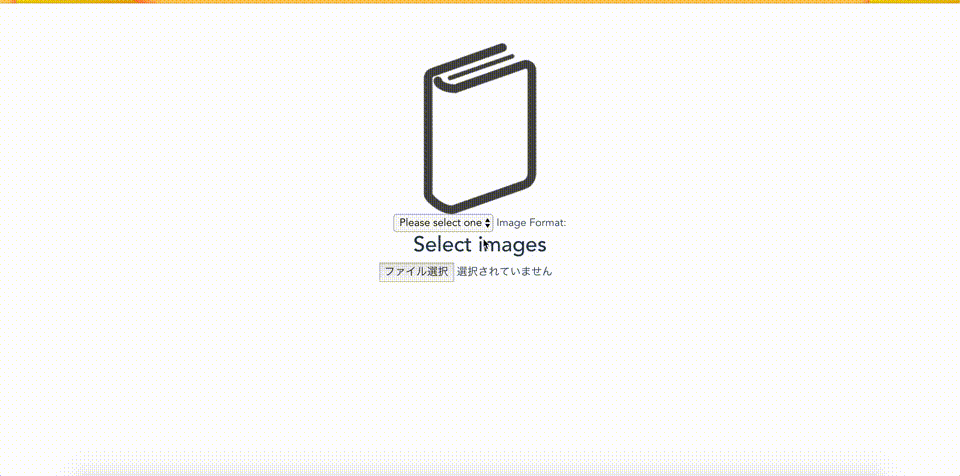

Client¶
Example Client App¶
You can use Ebook Homebrew Rest API for example client app.
Note
Examples App use ebook-homebrew demo heroku endpoint. If you use your own server, fork the code and change the backend URL.
Git clone Example app with :command:`git clone `:
$ git clone https://github.com/tubone24/ebook_homebrew.git
$ git submodule update --init --recursive
Stand Alone Web GUI¶
The basic WEB app which create PDF from your images built in the ebook-homebrew.
Install Flask and Execute commands below.
$ cd examples/web_gui/
$ pip install requirements.txt
$ cd src
$ python application.py
And Access localhost:8080
You can see The TOP page like blow. Click GO DEMO APP

Choose Files, digits and extension. Click Create! and Downloading result.pdf

Command Line Tools with using Rest API¶
Client App with ebook-homebrew’s rest API interface. Install requests and docopt and Execute.
$ cd examples/use_rest_api/
$ pip install requirements.txt
$ cd src
$ python main.py -h
You can see the CLI’s Usage.
Android App¶
Warning
This app is created flutter, so you can build an Android app and an iOS app,
but I don’t try to build ios app, because I don’t have ios.
Demo client Native App for using ebook-homebrew.
Install Flutter SDK and Build App:
$ cd examples/ebook-homebrew-android-app
$ git clone -b beta https://github.com/flutter/flutter.git ~/flutter
$ cat YOUR_APP_KEY > android/app/apk_key.jks
$ cat YOUR_APP_PROPS > android/key.properties
$ ~/flutter/bin/flutter build apk --release --split-per-abi
Or Download Google Play
Run App and Enjoy!

Web Front App (Vue.js)¶
Warning
ebook-homebrew-vue-client is Deprecated instead of ebook-homebrew-vue-typescript-client
If you want to use Web Front App, you can make reference of Example app building for Vue.js.
You can see 2 examples, Vue.js with Javascript or Vue.js with Typescript
Install Node.js and NPM and Execute it:
$ cd examples/ebook-homebrew-vue-typescript-client
$ npm install
$ npm run serve
Run App and Enjoy!
Command Line Tool using Rust¶
If you want to use more speedy CLI, Use Rust CLI
Install Rust and Execute commands below.
$ cd examples/ebook-homebrew-rust-client/
$ cargo run
$ cd target/debug
$ ./ebook-homebrew-rust-client -h
ebook_homebrew_rust_client 0.1.0
tubone24 <tubo.yyyuuu@gmail.com>
Ebook-homebrew Command Line Tools
USAGE:
ebook-homebrew-rust-client.exe [SUBCOMMAND]
FLAGS:
-v, --version CLI version
-h, --help Prints help information
SUBCOMMANDS:
status check server status
upload upload image files
convert convert image files to PDF
download download converted PDF file
help Prints this message or the help of the given subcommand(s)